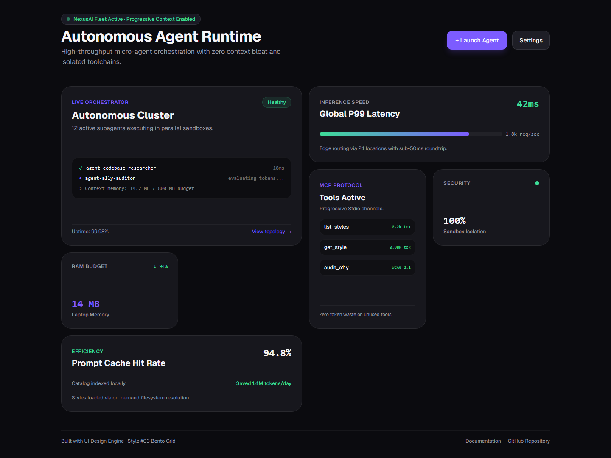
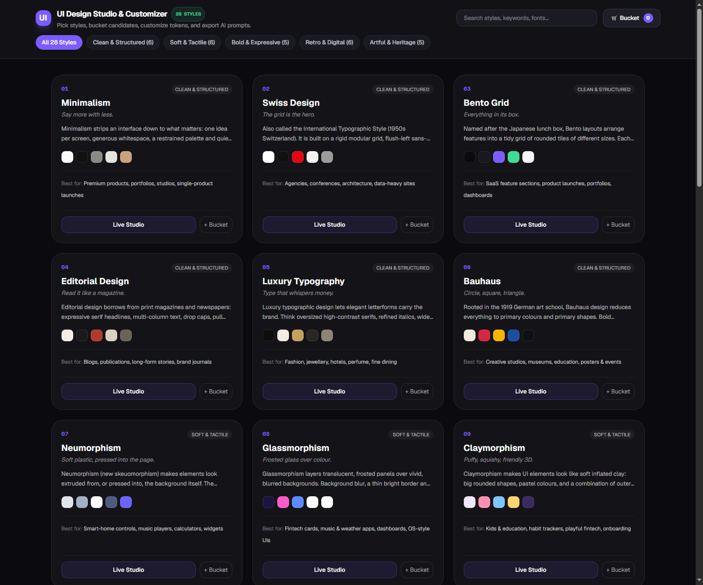

28 Styles · Progressive Context Disclosure · 4 Senior Audit Rubrics · Live Customizer
Interactive modular dashboard for NexusAI Autonomous Agent Platform featuring asymmetric grid proportions (2x2, 2x1, 1x2, 1x1).

Filter by 5 aesthetic families, bucket styles, compare side-by-side, and preview tokens.
